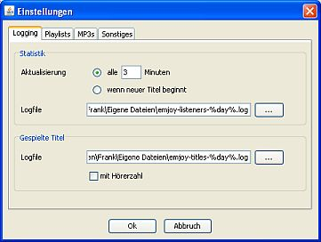

Hörerzahlen und Titel protokollieren

Station Admin kann die Hörerzahlen Deiner Station sowie gespielte Titel in Logfiles protokollieren.
Um dies zu konfigurieren klicke im -Menü auf und wechsele auf das -Tab.
Im Bereich konfigurierst Du die Protokollierung der Hörerzahlen:
- Unter konfigurierst Du wann die aktuellen Hörerzahlen vom laut.fm-Server abgerufen werden sollen. Dies kann entweder alle x Minuten passieren oder zum Beginn eines neuen Titels. Beachte dabei bitte dass laut.fm den Wert auch nur alle paar Minuten aktualisiert. Es macht also wenig Sinn die Zahl jede Minute abzurufen.
- Unter gibst Du den Dateinamen für das Logfile an. Du kannst dabei %day% als Platzhalter für das aktuelle Datum verwenden - so erzeugst du eine Datei pro Tag.
Im Bereich konfigurierst Du die Protokollierung der gespielten Titel:
- Unter gibst Du den Dateinamen für das Logfile an. Du kannst dabei %day% als Platzhalter für das aktuelle Datum verwenden - so erzeugst du eine Datei pro Tag.
- Wenn Du aktivierst wird zusätzlich zum Titel auch noch die aktuelle Hörerzahl ins Logfile geschrieben.
Für beide Bereiche gilt: Gibst Du kein Logfile an wird auch nichts protokolliert.